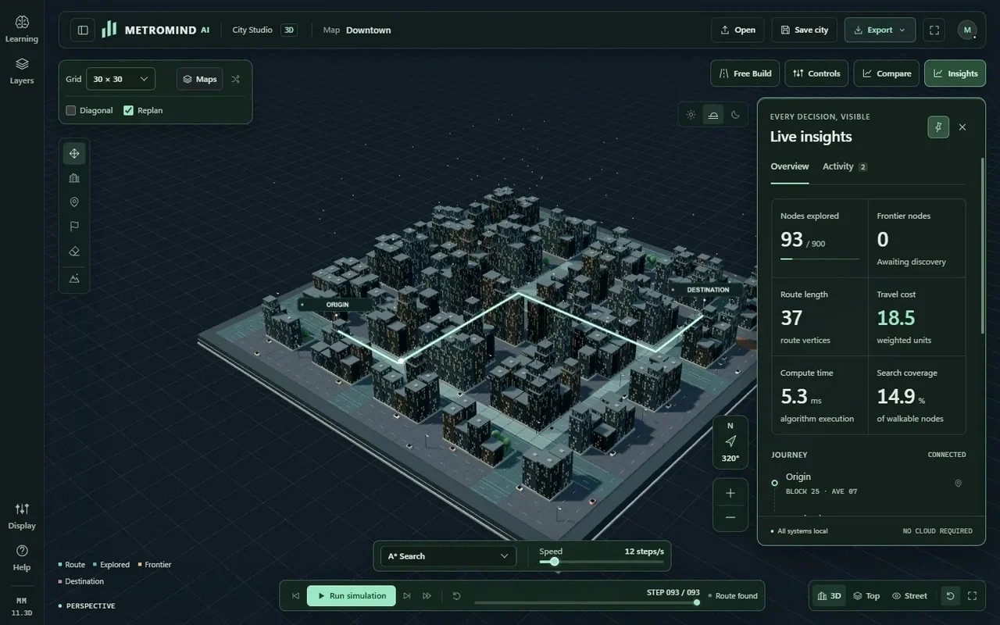
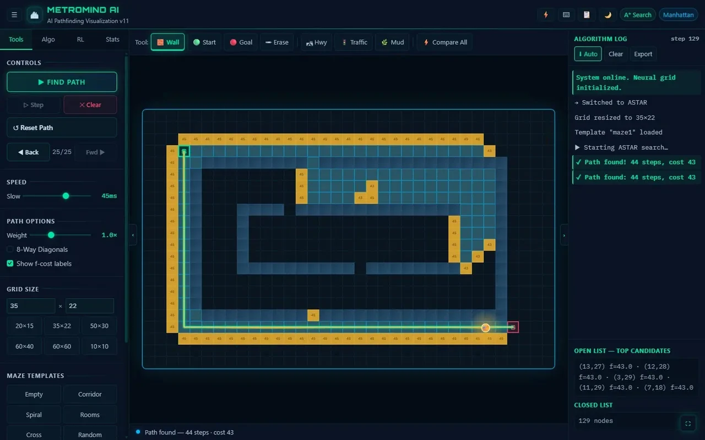

3D City Studio
Drag to orbit
City Studio screenshot
Watch the same search play out on a 2D grid and in a 3D city. Then open either simulator to build your own map.

City Studio screenshot

Nine search strategies and Q-learning
Scroll horizontally to compare all columns.
| Algorithm | Category | Runtime profile | Path guarantee | Dynamic replanning | Best for |
|---|---|---|---|---|---|
| A* Search | Informed search | Cost and heuristic priority | Conditional optimality | Full rerun | Point-to-point routing with a lower-bound distance estimate and heuristic weight 1. |
| D* Lite | Incremental search | Reuses previous search state | Lowest cost | Incremental repair | Repairing a route after a road closes or travel costs change. |
| Theta* | Any-angle search | Line-of-sight checks | Any-angle approximation | Full rerun | Smoother routes that can cross open areas at any angle. |
| Jump Point Search (JPS) | Grid pruning | Directional scans | Conditional optimality | Full rerun | Skipping ahead on uniform grids. The preview uses A* on weighted or elevated terrain. |
| Dijkstra | Uniform-cost search | Expands lowest cost first | Lowest cost | Full rerun | Finding the cheapest path on a weighted map. |
| Bidirectional search | Two-frontier search | Explores from both ends | Lowest cost in the preview | Full rerun | Connecting a known origin and destination by searching from both ends. |
| Greedy best-first | Heuristic search | Prioritizes estimated distance | No cost guarantee | Full rerun | Exploring toward the destination when route cost is secondary. |
| Breadth-first (BFS) | Graph traversal | O(V + E) | Fewest moves | Full rerun | Finding the fewest steps when all moves have equal cost. |
| Depth-first (DFS) | Graph traversal | O(V + E) | No cost guarantee | Full rerun | Exploring branches of a maze before backtracking. |
| Q-learning | Reinforcement learning | Episode-based training | No path guarantee | Retraining | Training an agent and inspecting its learned policy in either full simulator. |
V is the number of cells and E the connections between them. A* and JPS optimality depends on a suitable heuristic and settings.